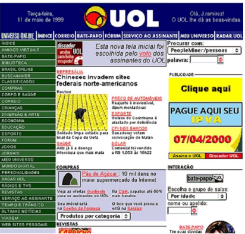
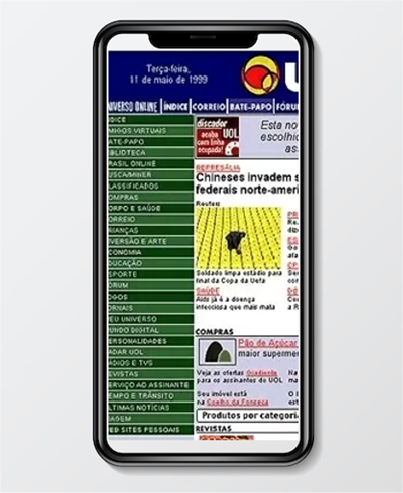
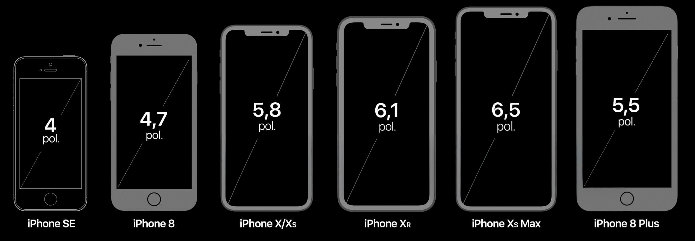
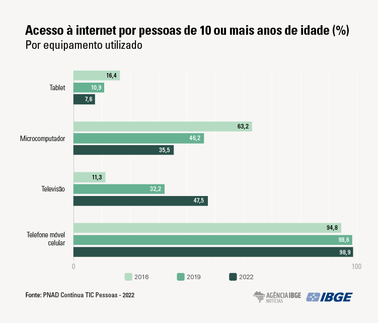

Neste material, você entenderá como funcionam os conceitos de mobile first e progressive enhancement, que são conceitos complementares. O primeiro trata de uma metodologia aplicada à parte visual, ou seja, design do site ou sistema, e o segundo trata da otimização e melhor adaptação em termos de performance e funcionalidades. No entanto, para entender como se chegou a esses métodos, é preciso primeiro entender como são os acessos à internet atualmente.
Atualmente, é extremamente comum acessar a internet via dispositivos móveis, como tablets ou celulares. No entanto, até o ano 2010, isso não existia. Qualquer site ou software criado para a web era desenvolvido pensando exclusivamente em resoluções (tamanhos) de telas predeterminadas. Veja na figura o layout do site do portal UOL em 1999:
Site do UOL em 1999
Fonte: UOL Notícias (2013)
Layout de um site de 1999. O layout é nas cores azul, amarela e verde. Totalmente estático, muito similar a uma página de classificados de um jornal impresso.
Repare que, na figura apresentada, o site era totalmente abarrotado de conteúdo. Nessa época, não se tinha muita referência de interfaces para a web. Então, claramente o layout é similar às páginas de classificados de qualquer jornal impresso da época. Também não havia preocupação com a usabilidade ou experiência do usuário final, e todo o layout era desenvolvido levando em consideração que seria aberto em uma tela de computador. Portanto, não há espaço entre os links, não há preocupação com os pontos de toque da tela e não há nenhum tipo de responsividade ou adaptabilidade para dispositivos com telas menores.
Para acessar qualquer site era preciso fazê-lo via computador de mesa ou computadores portáteis, conhecidos como notebooks. Nessa época, a interface era totalmente desenvolvida entendendo que o usuário final, ou seja, quem acessa, estaria acessando determinado site em uma tela de resolução padrão, que variava entre 960 e 1.020 pixels.
No entanto, a partir de 2010, começaram a se popularizar os celulares com maior capacidade de processamento de dados e com acesso à internet, os quais ficaram conhecidos como smartphones. Foi nessa época também que começaram a se popularizar os tablets.
O que ocorreu, então, é que aquela interface de site com base em uma resolução padrão não cumpria mais seu objetivo, pois não era amigável e muitas vezes não era funcional quando acessada em dispositivos com telas pequenas.
Veja, na figura, um exemplo ilustrativo de como ficaria o site do UOL de 1999 se aberto em um smartphone atual.
Site do UOL de 1999 aberto em um smartphone
Fonte: Adaptado de UOL Notícias (2013)
Layout de um site de 1999. O layout é nas cores azul, amarela e verde. Totalmente estático, muito similar a uma página de classificados de um jornal impresso.
Repare que o site não se adaptaria ao tamanho da tela, ficando com uma interface muito poluída visualmente e de difícil acesso em razão do pouco espaço entre os links.
Como o acesso à internet e os acessos via celular foram aumentando constantemente, houve a necessidade de adotar técnicas que criassem uma interface amigável para o usuário final, independentemente do tamanho da tela pela qual ele estava acessando. Logo, tornou-se impraticável tentar adotar padrões de tamanho de telas, pois, a cada ano, fabricantes de celulares lançavam novos modelos com resoluções de tela diferentes.
Tamanhos dos dispositivos móveis
Fonte: Adaptado de Blog do iPhone (2018)
A ilustração mostra três smartphones lado a lado, com tamanhos e resolução de telas diferentes. Sendo a primeira de 5,8 polegadas, a segunda de 6,1 e a terceira de 6,5 polegadas.
Em pesquisa realizada pelo IBGE, registrou-se que, em 2022, quase 88% dos brasileiros de 10 anos ou mais usaram a internet, ou seja, mais de 161 milhões de pessoas. “O equipamento mais utilizado para navegar na rede é, de longe, o celular. Enquanto isso, o índice de pessoas que acessa a internet pelo computador recuou de 63% para 35,5% em seis anos” (Acesso [...], 2023).

Acesso à internet por equipamento utilizado
Fonte: IBGE (2023)
Gráfico de barras horizontal comparando os acessos à internet via celular, televisão, tablet e computador, relativos aos anos de 2016, 2019 e 2022. No gráfico, percebe-se que os acessos via dispositivos móveis aumentaram muito, enquanto os via computador caíram.
Em resposta a essa mudança de como as pessoas acessam a internet e à necessidade de criar sites capazes de se adaptar a diferentes dispositivos e tamanhos de tela, surgiu o conceito de responsivo ou design responsive.
O conceito de design responsivo foi popularizado por Ethan Marcotte em seu artigo Responsive Web Design, publicado em maio de 2010 na revista A List Apart. Antes do design responsivo, os desenvolvedores enfrentavam o desafio de criar versões separadas de um site para atender a diferentes dispositivos, como computadores desktop, laptops, tablets e smartphones. Essas versões separadas, muitas vezes, levavam a experiências de usuário fragmentadas e exigiam mais esforço e manutenção.
Basicamente, tornar uma interface responsivo consiste em fazer com que a interface de um site se adapte a qualquer resolução de tela. Um site responsivo é capaz de oferecer uma experiência de usuário mais consistente e amigável, independentemente do dispositivo utilizado para acessá-lo. O design responsivo permite que os desenvolvedores criem uma única base de código que se ajusta automaticamente a uma variedade de dispositivos, economizando tempo e recursos.
Desde então, o design responsivo tornou-se uma prática padrão no desenvolvimento web, e os navegadores modernos oferecem suporte robusto para as técnicas envolvidas. A abordagem responsiva é crucial em um ambiente em que a diversidade de dispositivos é enorme e os usuários acessam a web por meio de uma variedade de plataformas e tamanhos de tela.
Uma das metodologias de desenvolvimento de interfaces responsivas mais adotadas atualmente chama-se mobile first.
Clique ou toque para assistir ao vídeo.
Nos últimos anos, a tecnologia vem evoluindo muito, principalmente quando o tema é internet, pois, com o passar do tempo, surgiram muitos navegadores novos, dispositivos novos e formas distintas de acesso.
É um desafio cada vez maior criar sistemas e interfaces para a web que cumpram seu papel principal e todas as suas funcionalidades, independentemente de como e por onde o acesso é realizado. Quem já utilizava a internet em meados de 2010 deve lembrar que muitos sites exibiam o seguinte aviso: “Este site é mais bem visualizado com o navegador ‘tal’”. Hoje em dia, criar um site ou sistema web adaptado apenas para um navegador ou tipo de acesso específico é algo impraticável para a maioria dos usuários. Uma forma de lidar com esse desafio é o conceito de progressive enhancement.
De forma literal, é possível traduzir o termo progressive enhancement para aprimoramento progressivo. Basicamente, é uma abordagem de design e desenvolvimento web que visa garantir uma experiência básica funcional para todos os usuários, independentemente das capacidades dos dispositivos ou navegadores que estão utilizando.
A ideia é começar com uma base sólida de funcionalidade e estilo, que seja acessível a todos, e depois adicionar gradualmente camadas extras de recursos para dispositivos ou navegadores mais avançados.
Os principais conceitos do progressive enhancement são:
Progressive enhancement envolve a criação de camadas de funcionalidade, começando com uma base funcional mínima que funciona em todos os dispositivos. Então, camadas adicionais de recursos são adicionadas, mas a funcionalidade básica sempre permanece acessível.
A base do progressive enhancement é geralmente construída com HTML (hypertext markup language ou linguagem de marcação de hipertexto) semântico para estrutura, CSS (cascading style sheets ou folhas de estilo em cascata) para estilo básico e JavaScript para funcionalidade essencial. À medida que as camadas são adicionadas, podem ser utilizados recursos mais avançados dessas tecnologias.
A adição de camadas de funcionalidade é baseada nas capacidades do dispositivo ou navegador. Dispositivos mais capazes podem receber recursos adicionais, enquanto dispositivos mais simples ainda mantêm uma experiência funcional.
O progressive enhancement está alinhado com os princípios de acessibilidade, pois garante que a versão básica do site seja acessível a todos. Isso inclui usuários com deficiências, navegadores de texto ou dispositivos com capacidades limitadas.
Como a abordagem começa com uma versão mais leve e funcional, o progressive enhancement muitas vezes resulta em um desempenho mais eficiente, especialmente em redes mais lentas ou dispositivos menos poderosos.
Veja um exemplo prático utilizando CSS:
body {
background: rgba(73,155,234,1);
background: linear-gradient(to right, rgba(73,155,234,1) 0%, rgba(32,124,229,1) 100%);
filter: progid:DXImageTransform.Microsoft.gradient( startColorstr='#499bea', endColorstr='#207ce5',
GradientType=1 );
}
Observe que, nesse exemplo de código, o estilo background funciona na maioria dos navegadores, mas, seguindo a hierarquia do CSS, quando houver conflito de estilos, será utilizado o que estiver na linha mais abaixo do código. Ou seja, se o usuário abrir o site em um navegador com suporte a gradiente, valerá o estilo mais abaixo. No entanto, caso o usuário acesse o site em um dispositivo em que a função linear-gradiente não funcione, será utilizado o estilo-padrão acima.
Em suma, o aprimoramento progressivo significa criar um design que proporciona uma experiência mais simples, mas ainda utilizável, para usuários de navegadores mais antigos e dispositivos com recursos limitados, ao mesmo tempo que é um design que progride a experiência do usuário até um nível mais atraente e completo em navegadores mais recentes e dispositivos com recursos mais avançados.
Neste conhecimento, você percebeu que as metodologias de desenvolvimento mobile first e progressive enhancement são abordagens essenciais para garantir uma experiência positiva do usuário em dispositivos móveis.
Adotar essas metodologias não é apenas uma prática recomendada, mas muitas vezes uma necessidade em um cenário digital diversificado. Elas garantem que os desenvolvedores estejam preparados para atender a uma ampla gama de usuários, dispositivos e condições, resultando em uma experiência mais consistente e acessível para todos.